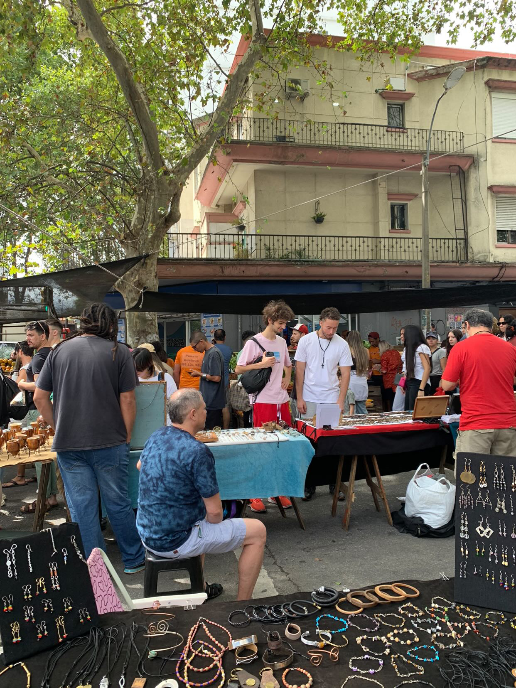
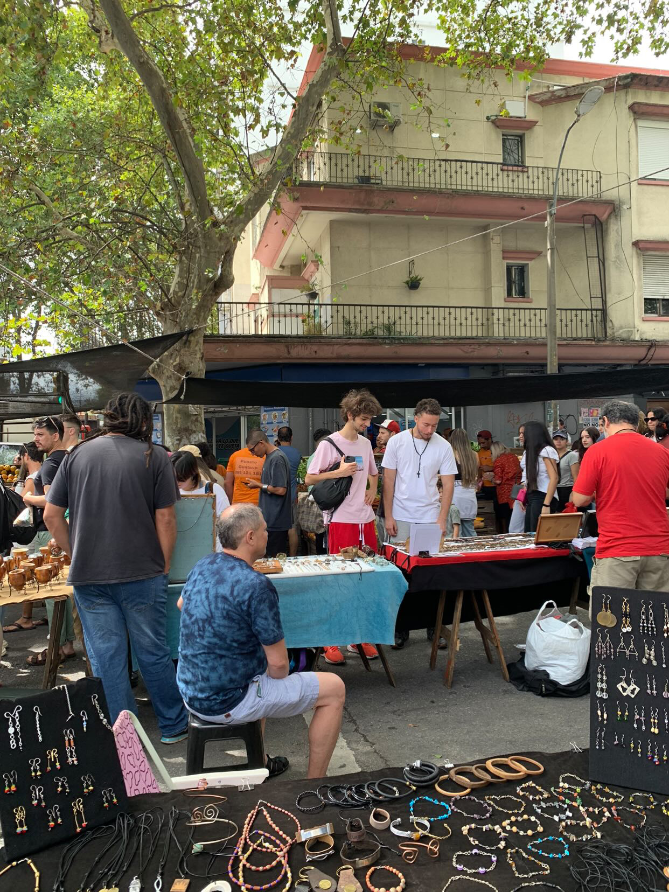

Timo vs Argentina
I don't know if you read the previous story, my amazing chronicle. I am pretty proud of it. Sometimes I may have done some mistakes or assumptions, but overall I feel like it was quite accurate. But I am done trying to be accurate, I am going to write a chronicle from my own subjective perspective, a new story.
So a lot has happened ever since the end of my first chronicle and my "diary" that I am doing right now. Alex is now in canada, Milla works at a graveyard, Sebs has a girlfriend, me and Sofe went to french classes, and many more things that I am not going to go over.
That being said, this diary is going to be a little different. I tried (probably failed) to be purely objective in my previous chronicle, however here I am not going to try, im just going to do and write whatever I want. Secondly, I might try maki ng titles because it's fun. Also, in the chronicle I always talked in the third person, but not here, I will just talk from my
Date:09/03/2025
Climate:Normal
Location:Uruguay->Argentina
Title:Rouph and Tumble
A lot of things have happened since the end of the chronicle, i have decided to pursue farmacy or some sort of chemistry. I kind of wanted to do music but given that my school didn't really teach me anything about music I thought it was a better idea to do something that I am more proficient on, chemistry. Also I have less chances of dying of starvation.
The plan is simple, I applied to several universities in the neatherlands, and if I get accepted to any of them I will go there. But if I don't, I will stay studying in Argentina. Argentina is like my safe zone, if all fails the worst case scenario is I become a pharmacist at the Hospital Italiano de Buenos Aires, which is not bad at all. The only bad thing is that in order to keep my safe zone. I have to attend to the university in Argentine tomorrow.
It's called the Universidad del Hospital Italiano de Buenos Aires(UHIBA) but i'm just going to call it the Italian Hospital. Anyways, in order to actually have a chance at getting accepted in the neatherlands I have to take a math test called the OMPT-B (Online Math Placement Test Level B) in order to remedy my defficiency in math that I aquired due to my decision to take IB Math Applications and Interpretations SL. During the timeskip I studied, I took the test, and I failed, then i studied some more with Mr Zarsky, and I really hope I am ready and I can get a good score on this test.
Today I moved from Uruguay to Argentina, there is a bunch of stuff I have to do like getting a bus card, getting new shoes because I forgot them in Uruguay, getting proof of vaccination for the Italian Hospital University, and much more while also having to study for the Math test which I have to take this week or else my parents won't let me go to Uruguay this weekend to visit Milla(who is in uruguay for some reason).
i failed to do many things today, I was toot tired because I couldn't sleep last night at all and also travelling is exhausting. There is a lot to do and I don't even know if it's possible for me to do it. But I believe in myself, I got this. Also I believe it's zarsky's birthday.
Date:10/03/2025
Climate:Hot
Location:My Apartment-Italian Hospital Area-Shopping-The house of my grandmother
Title:Hit the ground falling
I didn't sleep well last night. Today I woke up tired so I drank some coffee in Le Pain Quotidienn with my mother. I also bought a muffin and then we took an Uber to the Italian Hospital. Once I got there, I went to class and everyone was sat down already, I was the only one who had arrived late. It's quite characteristic of me so I don't mind.
I sit down on one of the few empty seats left, next to this guys called Ramiro and at the back of this other guy called Lorenzo. The teacher talks about his teaching methods and university life for like an hour and then he starts teaching stuff I already know. Except resolucion and sensibilidad, I don't think i've learned those before but they don't seem that hard to understand. Ramiro helped me a little bit to understand.
Then some lady's come and give everyone their institution cards. I still haven't taken a picture that I need to take in order to have my institution card so that might be a problem to solve later. After that the ladies just explain what they are here to do, I unfortunately don't remember any of their names.
Then I try to do the empadronamiento but I fail to wait enouph time. So instead I try to go early to the next event. Everyone was too early and we weren't allowed to enter before the specified time so we had to wait a while. Eventually we are let in, and then we wait in a room for a couple of minutes, everything is underground for some reason. But then we enter the auditorium (which is underground for some reason). So they talk a lot, they sing the Argentine National Anthem which I don't know, and the Italian National Anthem which no one knows.
At this point i'm just really tired, I fell asleep through most of the first speaches. But I was awake during a part where they showed that there were a lot of people from the interior of argentina, and 1 person from Chile, Paraguay, and other south american countries but those are the ones that matter. Maybe someone from peru. There were also 9 brazilians and one United Stadian person. However I don't know who any of these people are, I just know that they exist and I might run into them some day.
After that we did some activities where we kind of got into groups and explained why we chose our medicinal carriers and they made us right post its and stuff. It was okay, I was the only pharmacist of my group. After it finished we headed outside. On the way out I decided to ask two of my fellow companions how to do the empadronamiento, I kind of already knew how to do it but it was better to have some help and also I need to make friends. Their names were Pilar and Mica. Pili is from the interior of argentina but I don't remember from where exactly, she has a cat, she took english classes for a while so she probably knows english, and she is overall really nice, she is taking biochemistry meaning she might be in my class.
So i did the empadronamiento and I took the photo and stuff, very cool. I aquired a new friend, pilar, and also a new aquaintance, mica. Before leaving Pilar gave me her phone number.
Then I went to eat something with my mom in a shopping. I also bought several clothes, like a new sweater, new pants, and new shoes. Then I went to my apartment and I immediately slept, I had a dream.
Timo vs The Shapeshifter and Something Strange
There was an award show where Sebs' entire family was invited, including his newly aquired girlfriend. I was there so I sat down with him and we were having fun. We were in this huge building and the host was anouncing the best people on earth, he jokingly anounced Drake, Mr Beast, Donald Trump, and a penguin, before anouncing the actualy best person which was Kendrick Lamar. Kendrick Lamar and Drake where both sat on the same table arguing about music right next to us, it was real funny.
But then some woman approaches me and kisses me?! without my consent. And I am proper pissed but she ran away. So I go to another place with sebs mocking me for being kissed, I am in a window and in the distant shore, I see a strange fish crawl out of the ocean. And then I look away to Sebs to discuss the random situation and I look back and I see the fish entering this building.
I have a bad feeling so me and sebs escape the building by jumping off the window and later heading to a cabin in the woods. We wait there for a while, eating baked beans in a can. But then from a nearby pond, something strange crawls out. Sebs deducts that this thing is chasing me and I should try going really far, like to an island. So I do that.
I go to this island where I find Ethan and I explain to him the situation. The bartender gives us some clues about an old man that told a similar tale. He died in the 13nth floor of this restaurant that was here in this island for some reason. So we go to the 13 floor and we found a note, a story about a woman and a strange fish that chase a man for all his life until he died, you better not be cursed by them or else.../ I guess I was cursed when I was kissed
This is bad, I look out the window, something strange crawls out of the sea and into the island. It starts going up the stairs and Ethan aquires an idea. This fish is really slow, we can probably make it go all the way up the lighthouse stairs and quickly go down to save us a bunch of time. So we start doing that, the strange fish is like some sort of ugly fish with arms which it uses to drag itself on land. Its following ethan up the stairs and its all going well until I hear a voice and a lady comes, this lady starts taunting me, saying a bunch of stuff, none of it is important until she says "what if it's only pretending to be so slow" the fish suddenly starts moving faster and faster, Ethan trips and the creature catches up to him. I try to help him so I fend off the woman and kick the fish in the face. "I can grab you physically, it can grab you mentally" the woman says as I fight off illusions of the fish trying to attack me. I fall down the stairs and Ethan blew a hole through the wall and we are outside. We get a boat which we use to get the hell out of there but the fish is chasing us really fast in the water.
Ethan loses it by using some of his tnt to jump into the top of a building. I call Sebs because I want to set up a lunch meetup with him so that I can lure the fish and the changing woman and fight them with sebs and ethan. We have lunch at a restaurant, I am seeing one corner of the street and sebs is seeing the other, the only way to get us by surprise is from above, Ethan is hiding in the roof.
Suddenly I see the fish, and the lady comes crashing down in the table. But then time goes back instantly like 6 seconds, I see the lady falling again and then time stops right before she falls. The fish summons water to try to amortiguate the lady's fall, but for some reason this time freeze doesn't work on me. I steal their time device and the fish starts chasing me. I threaten to kill the lady by letting time go but the fish claims tha the doesn't care. I let time goe and the lady dies, the fish is shocked. So then I rewind time. I let the fish save the lady but I kept the time device.
Apparently, this is a duo of mythic entities that like trolling their prey a lot before killing them. They feed off their fear and they also find it really entretaing to play with their food. The penguin from the beginning was the shapeshifter who was planning on killing the host, but then she saw me and thought I was more interesting. So it turned into the woman that kissed me. Anyways I beat them, and hopefully they'll never bother me again.
Then I woke up and I went to my grandma's to eat, but I left when my grandfather came. Then my sister called, and I also told sebs about my awesome dream but he didn't really reply. This day was cool but quite unproductive, I hope to sleep better now.
I also talked to Dani, he basically told me that I have a low math level and that I should be productive before going to sleep, thanks Dani.
Date:11/03/2025
Climate:Normal
Location:My Apartment - Italian Hospital
Title:The Mock Exam (Bad Ending)
I arrived an hour early to class by mistake, but I wasn't the only one to make this mistake. mica too and others aswell. mica and I went to buy something to eat. We talked about where we live and other stuff, she is much less talkative than Pili which is a shame cause im not that good at talking.
After a while people started coming and the class finally started. I learned nothing, except from new types of concentration units for solutions. I spent most of the time talking to this knowledgable guy called Fernando. He knew that there were more states of matter than the usual 3. And he knows about the unit of temperture measurement rankine. Only smart people tend to know this much about stuff, so I can tell he is quite smart.
He also plays the guitar. He also knows how to use matrices and stuff like that. I also did a lot of math integration problems. I unfortunately didn't talk to mica or Pili that much today. After school i studied math and then I went back to my apartment.
I studied math and then I did the mock exam, I did worse than I expected, better than last time but worse than what I expected. After that I saw a notification that Milla visited Plaza Cafe and fetus? . fetus? is a location with a parking lot, i've never been there but it's like the place where most of the table tube gang once went to skate I think. I think i'll surely be able to visit Milla next weekend.
Overall the day was quite productive but I am afraid I won't be able to sleep well.
Date:12/03/2025
Climate:Colder than usual
Location:My Apartment
Title:Falling Fast
I woke up terrible and I went to class, it turns out that there wasn't math class today which is a shame because I just came all the way here when I could've just slept. So I took a cabify back home. Then I tried to sleep but I couldn't, this happened for like an hour until I went to Le Pain Quotidienn and I ate a bannana muffin, I love those muffins. Then my mother gave me the SUBE card that allows me to take buses. So I took a bus to the Italian Hospital with my mom.
Once I reached the university I entered to biophysics class and I sat next to pili. The professor was explaining how the class is going to work, he did that for a long time. Eventually he got to the actual content, uncertainty and error. I knew everythign he taught which was basically how to calculate error. Except the very last thing he taught, it was a new way to calculate error without using relative error. I spent most of the class trying to do learn how to use addition formulas in trigonometric functions.
At the end of the class Pili and I walked to a bus station. We talked about the last thing that the teacher taught and how pili and I didn't fully understand it. We talked about videogames too, she plays open world games like minecraft and subnautica. I also play minecraft but I also play ultrakill which is not open world but its really cool and it also has some good lore. We also talked about art and art festivals. Eventually we get to the bus station which got its sign removed so it was hard to find, but an old lady confirmed that the spot with absolutely nothing on it to indicate that there was a bus station, was indeed a bus station.
So I took a bus to my grandma's to eat a sandwich, then mom and I went to buy a lab coat, a sharpie, and notebooks. The notebooks had a discount, I got 4 notebooks for 10 dollars. I also bought a spicy alfajor which was one of the top 10 worst decisions of my life. I gave the alfajor to a homeless person, probably killing him.
Then i went back home to sleep. Then I did some math, trigonometry, I got pretty good. Then I sent an email to Mr Zarsky and also to Maastricht to re-schedule an interview. I started walking towards my grandmother's house in order to eat dinner, I was eating some crisps. But while I was wating for my mom to open the door to the building that contains my grandmother's apartment, a homeless man started searching in the trash. I decided to give him my crisps and it felt good. Almost as good as calling them crisps to intentionally annoy any american.
I eat and quickly sleep to get enouph energy for tomorrow, but not before I send a final email to Zarsky and scheduling my admission interview for Maastricht.
Date:13/03/2025
Climate:Coldern than usual
Location:My apartment - Italian Hospital - Some french restaurant
Title:The Laboratory Day
Today I woke up bad, I didn't sleep that good. So I spent 45 minutes trying to wake up completely, and I took the bus at 7.45 which made me arrive 20 minutes late to class. Pili looked at me funny because I was later. My classmates were doing an activity with ions, and the teacher guiding the activity was a student from a higher grade. The activity that everyone was doing was a group activity, so I scanned the class for potential teammates, my friend Pili was already in a group of 3, however there was this dude way in the back that seemes like a cool guy, so I sat with him and we did the activity together. His name is and we lauphed at how complex it seemed and how nomenclature in english was always the other way around in spanish. For example Hidrochloric Acid mentions hydrogen first, chlorine second, and acid last, meanwhile in spanish its Acido Chlorhidrico which mentions acid first, chlorine second, and hydrogen last. English makes more sense because you always mention the cation first in the chemical formula, like in NaCl being sodium Chloride instead of Cloruro de Sodio.
Then the teacher mentions something about HCLO which I didn't understand, it turns out that it was just a bad example she had used to make the students understand a concept. Then I practiced a little bit of math, but I was too tired so I always got every problem wrong. Eventually, kids from the other class came, and break started. I went to get some facturas at a nearby panaderia and I came back. We corrected some questions about concentration unit conversions. While this was happening I did some math and the guy next to me played chess.com
After that we had a second break where Pili and I talked about random stuff. Then we all put on our epic lab coats which I bought yesterday and we went to the lab. In the lab we learned about the differnt types of equipment, I learned all of the equipment names in spanish. Everyone learned how to use a pipette and a scale, i felt good because I already knew so I could help Pili and Ian do it correctly. We weighed 2.5 grams of salt in the entire class and we also learned how to create a tiny envelope in which to encase the salt, or whatever drug.
I also learned about how to calculate what mass I should use if I know that a salt i hydrated, something that I didn't know before. Additionally I learnt how to fold a piece of paper in a way where I can safely contain any powder. Pili also showed me how to swtich my Uruguayan phone number to my Argentinian phone number in whatsapp.
After that, I went to the bus station and went home. I did some math, but I was getting all the answers wrong because I was tired. I decided to call Sebs. We had fun talking to each other, he had a great time with his girlfriend in Uruguay, and he has been working hard on his job, he works for my dad to import stuff to England. He is also working on a side project to grow and sell spice plants. He is also going to a dance tomorrow. And finally he is also going to a party tomorrow with sofe, one that I was invited to before sofe knew that I was leaving to Argentina. Sebs and I also talked about mushrooms and how Ethan had done weed and shrooms. Sebs also confirmed a theory I had that Ethan used to like Sofe, Sebs lauphed at me because he said it was obvious. We also talked about shoes and how Ethan is one of them. More interestingly, Sebs has apparently not hanged out with Milla for some reason, even thought they are both in Uruguay and both in montevideo, I guess sebs hates fun. We theorised about an ultimate corssover episode, hanging out with Sofe and Milla, it could either be a nightmare or the best thing ever.
Eventually my mother invited me to a cafe and I decided to go. I ate a Chocolate Ingot and some Chocolate Milk. My mother explained to me that sugar is addictive and going one day without sugar was challenging, I accepted the challenge. Also I decided to keep my Uruguayan phone number, so I might have to tell mili to use my uruguayan number.
Then I was going back home to my appartment when I got an unexpected phone call from none other than Mono himself. He told me a little bit about his life, I updated him on the fact that I moved to Argentina and I started university and all. I also told him that I did shrooms with Bruno and Ethan and we tried to play minecraft. This happened the day before I moved to Argentina.
After that, I got an unexpected call from one of my favourite people. Mono.
Mono and I tend to understand things better when we do it together, and since my journey in math was not advancing because of my tiredness, I decided to help mono out. We had a lot of fun and we learned about a new equation that relates pressure to the density of a gas which was really epic. We also figured out how to relate temperture to pressure which was a nightmarish looking equation. Overall we both gained a good understanding about enthalpy, intermolecular forces, and math. I also updated him on what is going on in my life.

Math in chemistry
Then I ate at my grandma's house, I ate some good spinach tarta.
Date:14/03/2025
Climate:Normal
Location:My Apartment - Italian hospital
Title:Mr Lopez's Birthday
I woke up terribly, without an alarm, I don't even know how I woke up, but I did it. And I took the bus. Everything was going pretty well until I decided to get off at the wrong spot. So I had to walk a little bit and take another bus, causing me to be 30 minutes late to my first Cellular Biology class. Pili looks at me funny realising that this is not the first or the last time I am going to be late to class.
So I sit next to this person that I've never met, and I don't know her name because I was too tired to hold a conversation. The teacher gives us ricino seeds and he proceeds to explain how ricino has several medical uses. He also tells us that if we eat the seed we will die from a poison, and he explains how this poison was used in a pressure gun to kill someone, it was also used to try to kill obama. The lesson of the story is that stuff can be used to aid or to hurt, and this career will help me learn how to use stuff to aid.
Then we make groups, I join a group with Pili and other girls. They gave each group two germinated poroto seeds in a cup. Then they told us that we should ask deep questions about it. Here are the incredibly deep biological questions we had
- What is inside the seed
- How does it create a micro ecosystem
- How does it interact with other life forms
- Why is it green and could it be another colour
After that, all the groups shared their questions, Fernando was by far the one that had the most quantity and quality of questions. He is a knowledgable man and he likes showing that off by doing things such as calling DNA deoxyribose nucleic acid(or whatever the spanish equivalent of that is). Then we try to answer the questions even though we were not instructed to do so. Later comes a 10 minute break. My group was composed of Pili, me, Rosario, Milagros, and someone else. This group followed Pili in her quest to get some coffee from the several coffee machines scattered around the floor of the hospital. However none of them worked to Pili's misfortune, so everyone goes back to the class. I then go to a cafe alone where I buy 2 empanadas, they where quite pricey but I was really hungry.
When I came back the teacher instructed us to try to answer the questions we had. We had already done this so we jusst sat there trying not to fall asleep for 30 minutes. The reason we couldn't just sleep in class was because we were in the front seats since that's Pili's prefered sitting spot. We all shares some answeres the answers that we induced without using phones.
Then something really unfortunate happens. The docentes come to give a presentation about lab reports and how to do them. They call lab reports "trabajos practicos" and they basically go through all the details of how to make a lab report, something I have already done 20 times. Safe to say that I was having a lot of trouble not falling asleep. I wasn't the only one though. Towards the end of the presentation, I noticed they made a mistake with the emails, I pointed it out which hopefully gave the appearence that I was paying attention throughout the entire presentation. Then they anounce that there are still 3 hours left of class and I kinda just wanted to end it all right then and there.
We had a small break that saved us. Pili and I went outside and we saw mica waiting for the elevator. We chatted about how that lesson just now was really bad and we would never want to go through it again. mica, Pili, Rosario, and I went to the cafe that I bought empanadas from. The cafe has a sign that says "cafe" which mica found funny since she thought that was the cafe's name. The cafe's actual name was manana and it has a guy that has some kind of burn mark on his eye, he looks really similar to zuko from avatar: the last airbender.
We all bought coffee in order to survive the following hours. After going back to class, the teacher taught some chemistry, which I am very proficient in so I just decided to do some math. I also answered some questions every once in a while to not raise suspicion that I wasn't paying attention. A noteworthy thing is that zuko and the teacher both told me to speak more loudly so I should probably do that more.
Then we all started going home. I usually stayed studying in the flex space equivalent that this hospital has. They call flex spaces "zooms" here, so i'll call them that. However this time I just went straight to the bus stop because I was really tired. A group of students was walking the same direction, they were talking something about bullying. We walked for a while and apparently mica and I actually live really close to each other in recoleta. We talked about how hard it was to stay awake during class today.
Once I got home, I did some math. I also texted Alex asking him if my sister could talk to him because she is considering taking IB Math AA HL which is a really touph class, alex said that there was no problem. I was getting all the math problems wrong because I was so tired. So I try to get on a call with ethan so he could teach me how to download ableton. While I waited 1.5 hours for Ethan to get ready, I ordered a shwarma. I tried downloading ableton by follwoing Ethan's steps but it took too long, so we talked about how are lives are going. I told Ethan about the friends i've made and Ethan did the same, we are both really advanced for our classes. Then we decided to play super smash flash 2. It was pretty fun, I played mostly as the dark mage and Ethan played mostly as goku, I also ate the shwarma. And then at 17 I had a class with Mr Zarsky.
Zarsky gave me some useful information about how to solve several forms of quadratic equations. And in cases where the equations weren't quadratic, he taught me ways of making those equations quadratic in ways where I only needed to find the real roots. We also briefly went through properties of logarithms.
After that I went to say bye to my grandma and also to get my moms charger from her house. I came back to the appartment. Ethan and I played some more super smash flash 2 until he has to go. Then I practiced playing the guitar for a bit, I finished my shwarma, I texted milla, and I went to sleep.
Date:15/03/2025
Climate:Normal
Location:Argentina->Uruguay
Title:Return
Today I woke up early, and I returned to Uruguay for this weekend in order to visit Milla. Everything went fine except I forgot a mastercard in my apartment. When getting home my sister informed me about her math situation. Basically my sister is considering taking IB Math HL but she isn't sure because Orrico described it in a very scary way. My sister asked Alex about Math HL and Alex says that she should only take it if she likes math. My sister also wants to ask him how he balanced volleyball and math since orrico told everyone that if they are taking math HL they would probably have to quit some after school activities.
Also my mother informed me that apparently Ms Coyle and Mr Amaral called my parents multiple times to recommend that I shouldn't do the IB because it was too hard and too structured and I was going to fail. So it feels extra good to have passed the IB now. Sebs also told me about how he went dancing with Sofe, Bruno, and Sofe's british friend from her university, her name is Marina and Sebs decribed her as "Eitokuesque".
After that, Sebs came. We tried to reserve a court for paddel but the next available time was at 19:30. So sebs started playing minecraft on my laptop while I played my guitar. Sebs was playing on a server that was created during the timeskip. When the server was created Sebas played in my laptop with Ethan and created a base with a farm while I returned a manual car to a car rental. After that, I decided to play in this world aswell and I went really far. Now today Sebas is going to try to get back to the base
Sebas finding the most useless ore in minecraft
After that, we went to eat pizza while talking about how shoes control a lot of the world and what shoes believe in. Timo also came up with a new way to call jews(shoes). We also talked about all the religions and we concluded that the best religion is christianity. In my opinion specifically the christianity represented by Dante's Inferno.
After that we went to play paddel and Sebs suffered for an hour because nothing he was doing was working. He was really struggling. So we struggled for like 2.5 hours until we decided to go back. We went through an alternative route where I showed Sebs the first house that I inhabited in Uruguay as a child and the place where I took my first music class. It's really strange how everything is so close to everything else, as a kid everything just seems bigger and farther away. Then I took sebs home.
I talked to Milla and Sebs, tomorrow we are meeting up at tristan narvaja at 10.00-10.30
Date:16/03/2025
Climate:Normal
Location: My house - Tristan Narvaja - Rudy
Title:Milla Day
Today I woke up quite tired for some reason, and I drove towards the Tristan Narvaja Fair. It's a fair where people sell random things. And there is no official price so you can barter the price sometimes. When I first arrived I called Sebs, and he came to me. He told me that he was leaving towards his home since he couldn't find milla. He tried calling her and texting her but she only replied with emoji's. So I called her and she told me that she would come to us. Sebs and I walked for a short while and I started writing down things I might want to buy in the future. Then we stopped to check on Milla's progress towards us. The Table Tube Gang has a life360 group, basically we can all check each others locations, except Sebs, he deleted that app. So we checked life260 and milla was surrounding us, she was somewhere amongst the people. It turns out she was taking photos of us.

 

Milla secretely taking pictures of us
We walked there for a while. We went to a bookstore where we saw a lot of interesting books such as a book about flies, a book about batllismo, and the new testament(mini version). Sebs bought a book about punta del este. Then we walked further into the fair but nothing peaked our interests so we made our way back.


Library Adventures (Milla tried to dodge selfie time and she was partially succesful)
At this point I had written a bunch of things that I might want to buy in my phone. So I went to a nailcutter that I thought was cool. But it turns out it was low quality so I didn't want it. Then there was this cool sweater that was made of wool. The man was willing to sell it to me for 1500, so I was about to buy it until I tried it on and I found it too itchy.
Then Milla left on her search for a good uruguayan sticker. Sebs was really tired at this point so we grabbed some chairs from a chair-stack of a restaurant and we sat down while Sebas drank a bear. I talked to Sebas about how I wanted to buy at least one thing from this place since I won't be coming back to it any time soon. So we explored a bit until I settled for a cool yellow shirt that had my favourite art piece from Torres Garcia called "La America Invertida".
Fun Fact:The America Invertida art-piece represents latin-america as the center of the world and it being on top of the united states instead of the other way around. It's torres garcia's way to remind us that everything is relative and south or north are just 2 orientations that we made up, from a different perspective we could actually be on the top. This art-piece was suggested to be used during an international art festival t-shirts in a school but it was rejected because it might have been offensive towards Americans.
Anyways, we found milla a little later whom has succesfully aquired a sticker. We planned to go to eat something after the fair but apparently Milla had to leave because people were wating for her... in piriapolis. Before she left we asked Milla if we should have lunch at a really good Korean restaurant called Araryio or a really good burger place called Rudy. Milla suggested the korean place before leaving, we aren't going to see her again in a long time.
So we started heading to Rudy, and Sebs made a comment on how elusive Milla was. Sebs also informed me that he used to be a model as a kid and his parents put the money that he made as a model into a savings account and now he has 4 million dollars. I don't know how much of that is true but yeah. He plans make even more money out of this money, he is interested in entering the real estate buisness in Uruguay. He is also interested in buying a house soon where he can stay and live with his girlfriend. Pretty epic stuff.
Eventually we get to Rudy. I paid for Sebs burgers because he paid for my pizza yesterday. They also got my order wrong so they gifted me a salchichon de chocolate.With Sebs we talked about how its funny that we usually only talk about the same people. Ethan, Dani, Sofe, and Bruno. Sebs also likes to talk about shoes and her girlfriend, and I like to talk about trump and how we should reset the world.
Sebs eventually leaves via uber and I go to the bus station. This was a tiring day, I fell asleep in the bus station, when I woke up I saw the 109 bus in another station, meaning that I was in the wrong station. So I ran towards it but it was too late. I had to wait 26 minutes for the next bus. Eventually I did get home. Fede asked how was it, and we all told him what we bought and stuff. I also asked him about the meaning behind Torres Garcia's America Invertida. Fede also informed me that the president Argentina sucks a lot. Very unfortunate. Tomorrow I have online class and i'm also leaving to Argentina once again.
I forgot my salchichon at the bus station :(
Date:17/03/2025
Climate:Hot
Location:Uruguay
Title:First Online Classes
Today I woke up at 10, and raelly tired. I was supposed to wake up at 8 because I had online classes of Biophysics. But for now its only physics and we are learning about errors. So it's safe to say I didn't really miss anything important.
Same thing can be said for math. During Math I made some cool advancements on my website. I implemented some JavaScript and I also made it more accesible through the phone. I also texted the Sunday groupchat. It was a groupchat formed during the timeskip. It's a group of Sofe, Sebs, and I. So I invited everyon in the sunday groupchat to go to crepes like around 14:15. But Sebs and Sofe found that time too early so it was changed to 14:30.
Sofe arrived really well, and I arrived a good 20 minutes late unfortunately. Eventually i did get there and I got a crepe. Crepes has a card that you can get which gives you a free crepe every ten crepes. This was my 9nth crepe which means that the next time I go to crepes I will get an extra free crepe.
Sofe asked if she could have the extra crepe coupon. I thought about it but then I realised that it would be really epic to come back and be able to eat and extra crepe for free so i had to say no. Sofe told me about how she started university and met this new friend called Marina. She is from britain and she does dancing. Marina had gone with sofe, Sebs, and Bruno to a music thing and Sebs said that she was chill.
Then I updated Sofe on all my life, it was pretty cool. I told her about how we went to Tristan Narvaja yesterday and I got a cool yellow shirt. She said she liked that shirt and it had her favourite torres garcia artwork there(it's my favourite too!!) Then we saw on our phone that Sebs wasn't coming which was really sad. Our crepes came and we devoured them because both of us hadn't eaten yet. Then I suggested going to Rudy since I wanted to eat a salchichon de chocolate to compensate for the fact that I lost mine yesterday.
On the way there we talked about tiktok/reel news. TikTok news could either be true or false, no one knows with so much misinformation flowing around these days
- La Roche Posay is cancer (Sofe uses La Roche Posay a lot)
- Fried things are worse than ciggarettes(Sofe was going to Rudy to get french fries)
- Milei is a terrible person(That one isn't really up for debate anymore)
On our way to Rudy Sofe commented to me that the waitress from Bar Arocena had a massive ass. I responded saying I hadn't noticed and she said that one of the reasons she wears sunglasses is so that he can look at people without others knowing. "So that you can look at their asses" I said. Sofe then says she is a very observative person.
We eventually get to Rudy, Sofe has been her several times, but she remarks how this is the first time she has been here. She later clarifies that it's the first time she has been here under such awesome conditions(weather, sunlight, stuff like that). So we order a salchichon of choclate and Sofe orders french fries.
I tell her about the paddel incident with Sebs the other day. Me and Sebs tried playing paddel for 2 hours which made me tired for the next day where we walked around tristan narvaja for a while. This tiredness caused me to fall asleep in the bus station, miss a bus, rush for the next bus, and forget the salchichon that I was gifted from Rudy. And that is why I am ordering one right now.
Sofe has a very shocked expression in her face, I am guessing she was surprised I didn't get robbed. She then mentions that Lara asked to see some of her short films but Sofe doesn't want her to see them. I ask why, and this leads Sofe to go on a whole tangent about Lara being evil. This is quite curious because I've never heard anything bad about Lara. Her constantly cheery and over-expressive attitude might come off as fake but that's just about it when it comes to things that could be considered bad about Lara. However Sofe has offered me the first "evil" perspective of Lara.
If you are actually curious you can read by hovering over this text
So it all started like 5 years ago when Sofe dated Lara's boyfreind, Agustin. I am using the word "dated" very generously because they barely kissed twice. But then Agus cheated on her and they never saw each other again.
It turns out that Agus never forgot about Sofe, and has basically been obsessing over her?? That part is unclear to me. According to Sofe, Lara told her that Agus talked about her when he first met Lara. Sofe found that strange since it's been 5 years. But for some reason now, Lara wanted to invite Sofe to be with Agus which is kind of insane?!?
Sofe obviously rejected this invitation several times since it would've been very awkward. And one day Lara jabbed at Sofe about how Agus cheated on her in the gym. Juanma and Ale heard that and inquired about the situation. Sofe instigated Lara to repeat what she had just said, knowing that she wouldn't repeat it infront of the others.
So yeah, my best guess, if any of that is true, is that Lara was trying to get rid of any attraction that Agus had towards her by inviting Sofe to be with Agus and having them discuss their feelings???? It completely beats me. Also apparently Sofe was really awkward at my birthday party because Agus was there so Sofe if you reading this im sorry.
So anyways Sofe was stranged out by all of that and decided to not share her films with Lara. We checked the time and we realised that I totally had to leave like 30 minutes ago. We both walk towards my car.
I thank sofe for giving me this new perspective. I tell her that I love hearing different perspectives of stuff, specially people. Because I only have one perspective of everyone, and that perspective tends to be good since I think I am a very forgiving, always-looking-at-the-positives kind of person. So hearing about people talk about the negative qualities of others gives me a lot of insight, and its just so interesting. Sometimes it's like they are descrbing a completely different person to the one I know.
We get to my car, I'm taking Sofe home, and since we are on the topic, Sofe talks about Fede. Now if you have read my epic chronicle you know how annoyed I am at the fact that Fede and Sofe hate each other. They both share so many ideologies and if you knew both of them you would think that they would get along really well. But the contrary is true. They get along terrible, so bad, its actually insane. And I've tried to make ammends between them, I was like the peace negotiator between them during an art festival but I only made it worse. And every interaction they have ever had only made it worse which is a shame because they are both people that I respect a lot.
You might be wondering, what is the origin of this hate. Nobody knows, it's a complete mystery. But Sofe brings this up because she recently found a note that pertains to this. Allegedly, during the first week of school, Fede called Sofe a whore. Sofe retaliated by giving Fede a very insultive note essentially calling him fat. Sofe admits this wasn't her proudest moment but she was just mad that Fede called her a whore barely having known her. Sofe theorizes that perhaps this was the start of their hate-hate relationship.
And this a staisfying-enouph conclusion for me
Trying to find out why exactly they hate each other has become a meaningless task, and don't get me started on how immposible it is to have them get along.
But from my years of expertise in the area I think that I do have a theory about who is more responsable for the animosity between the two. It's Fede and there are really no surprises there.
Fede is very selective with his friends and it's very possible that Sofe just rubbed him off the wrong way. Maybe Sofe's efforts to be Fede's friend made her annoying to Fede.
From all the evidence I have gathered from both Fede and Sofe, Sofe is the one that has always given me more concrete and specific answers while Fede's answers have always been subjective. Like "sure I get why you might have been insulted by that" instead of "oh yeah that is indubitably bad".
That could be just Sofe being better at convincing others. But I don't think so because Fede is known for being very selective with friends and having stored feelings for many peoples. I don't get that from Sofe at all, she is really open about how she feels.
Sofe then adds that she had never tried as hard to be friends with anyone as she had with Fede. She went to like a charity event and stuff. Also, she found it weird how Fede wanted to hang out with Angie even though she was clearly homophobic. Fede sometimes says that Sofe is transphobic but Sofe argues that she has trans friends.
Then I leave sofe at her house, but not before she rates my driving. A 5/5 ;)
Then I went home, packed my things, and moved to Argentina
Date:18/03/2025
Climate:Hot
Location:My Apartment, the streets, Daily Coffee
Title:Filler Episode
It's Nata's Birthday today. I said hi to her through instagram which reminded me that I had a hanuka wallpaper in her chat. Very funny.
I woke up with closey eyes, but I couldn't fall asleep. I was realyl sad about missing Math class but then I realised that what I actually missed with Inorganic Chemistry, which is good because I am already quite proficient in chemistry. Tomorrow I have math and it's going to be epic. Talking about Math, I decide to try to do some math myself, but I am actually so tired, I can't concentrate it's so hard. So instead I start cleaning up my room, tyding things up so that it looks better, and now it does.
I also order myself a pokebowl which was pretty nice. Then Pili set 17 as the time to do some biology group work that we needed to do. So I spent sometime trying unsuccesfully to do math.
Then I walked really far to get some plugs for my stuff since I didn't have Argentina plugs. On this walk I also bought a manual shaver and a vegan burrito. I was also trying to buy an electric shave but I ended up buying a normal one.
I get home at 17, just in time for me, Pili, Rosario, Milagros, and someone else to start working for Bio. So we do some work, I find really cool resources from perplecity which we can include in the document.
Then I leave at 18 to have a class with Zarsky, I learned about inductive differentiation, which is not in the syllabus. It's just that Zarsky has such a good way of explaining things that it makes me want to learn more instead of practice what I already know.
Then Milla sends a message through the table tube gang groupchat asking for recommendations of restaurants in Punta Del Este. Fede googles some restaurants and Milla tells him that she can obviously google them if she wanted to but she wanted to know if anyone had gone to a specificly good resaturant. I suggested Rex which is a burger place that is really good. Milla wanted stake so she probably didn't go there.
Then I went to have dinner at daily coffee. I ordered some spaghetti and then a man came to talk to me. He asked me why I looked so thoughtful and I just said I was tired. Then he lectured me about how being a nice person is something that is really tiring some times and that is why not everyone is a good person. He also taught me a new phrase "cada dia tiene su afan". Then he asked if I wanted to buy socks. To his surprise I actually didn't have socks because I forgot them all in Uruguay so I bought a pair. And that's the last interesting thing that happened.
+ 1 Sock Pair
Date:19/03/2025
Climate:Hot
Location:My Apartment
Title:Unsure about everything at this point
I wake up tired today. I couldn't really sleep well for some reason I don't know why my body just doesn't want to sleep at night it's so retarded. I drink a concentration pill anyways and I make my way to the bus. I ask an AI doctor what is wrong with me and it gives me some probable causes. The most likely cause is stress.
So once I arrive to the class, there is no one. I ask around but no one seems to know anything so i text pili. It turns out that Math actually starts at 9:14, not 8, because Math can never actually start at the time it's supposed to. I do some math, I get some empanadas.
People start arriving slowly. Fernando sits next to me and we talked about a bunch of stuff while the teachers talked for what felt like an eternity. Fernando was helping me with certain syntax that is used in spanish math. He also kinda mocked me for speaking a lot of spanglish which is fair.
I also meet Martina and Nacho and us 4 start drinking Mate. This happened for quite a while. We talked about stuff a lot of stuff. One of the things we talked about is how Martina is also living alone for the first time. Eventually Biophysics came, but it wasn't any different.
I went home, I didn't see Mica on the bus, maybe cause she left much quicker than me, or maybe cause she took another bus. Once I arrived home I did a lot of math, I also gave my grandma some alfajores, a mate cup, and some pants to wash. It was nice seeing her. Then I went to eat some wok at daily coffee, it was delicious.
But on the way back my mother informed me that i had missed the Maastricht interview that was yesterday and that made me so sad. It's so hard to keep track of so many things, specially when I can't sleep because of some stupid reason. I don't feel like I'm getting into Maastricht now. I gotta try my hardest for AUC and Groningen, I believeeeee.
I actually went to sleep at 21:00 but I couldn't fall asleep in the next 3 hours so I started doing math annnnnd
Date:20/03/2025
Climate:Normal
Location:My Apartment - Italian Hospital
Title:Diluted
I did math till 4 am where I fell asleep, and I woke up at 10, debating weather to show up to class or not. I then went to Le Pain Quotidienn and I got a Hot Chocolate and a Cacao and Berries Muffin. I texted Pili and they said that they were investigating how to dilute things. I decided to go because it would be fun to hang out with people.
I said hi to Fernando and Martina and I met Juan. They asked me why I came just now and I said that it was because I decided to stare at the ceiling for most of the night instead of sleeping(except I didn't "decide" to do that). I entered the class and then I went to the chemistry lab where Pili asked me the same thing, so I answered the same thing. Pili says that she often drinks melatonin, otherwise it's really hard for ehr to fall aslee.
In the class we dilute some salt into some water. In the last lab, we weighed some salt using a scale and then we encased the salt in a paper envelope. The teacher(Ms Suseya) did my envelope because apparently I had done it wrong. However she also did it wrong because some salt fell out of my envelope, and also Pili's envelope. So we had to quickly re-weight the salt in order to make some saline solution. After that We diluted a solution of copper. I took some extra time because I wanted to be really precise. I was the only one in the class mixing copper with water at one point. But then I finally finished.
Later that day, I ate at daily coffee and my mom informed me that I missed
Date:21/03/2025
Climate:Hot
Location:My Apartment - Italian Hospital
Title:Back to Home
So today i'm going back to Uruguay, but first I have biology class. I didn't pay attention in biology at all. I just did stuff in my computer for most of the class.
Then we had a break where I went to buy some cool orange juice. Martina, Juan, and Fernando where there. Fernando and Juan were waiting for Martina who was buying a coffee. While Fernando explained where they were to one of his friends, he called Martina "la lesbiana", I don't know if that was a joke or she is actually lesbian. Then Fernando decides to also buy a coffee, the rest of the group hesitantly abandons him because they don't want to be that late to class.
So we all arrive a little bit late to class, and Fernando arrives a little bit later. The teacher explained some stuff that I tried to pay attention to but I failed.I do remember that he went through a lab that me, pili, rosario, and others created and it was the one with the most amount of information so that's cool. Them the docentes came to talk and I actually fell asleep here.
Then we went to the lab in order to look at blood and bacteria through a microscope. We were all seperated into our groups that we formed last biology class. My Biology group is Pili, Rosario, Milagros, and someone else. The lab was pretty cool, I am pretty sure we need to write an entire lab about it which I am not really excited to do. After that the docentes told us that now we have to go to a second lab where he will show us something.
I had to leave early because I had a bus to take, and so i did that. Pili told me that Miguel showed us something about optical illusions, it sounds cool but honestly i'm too tired to care about anything anymore.
I take the boat back to Uruguay, I didn't study any math today :( Through the speakers, they anounce that cars can't leave or enter the boat all at once because of some technical problems
Date:22/03/2025
Climate:Normal
Location:Chinese Store Wantan
Title:Chinese Episode Part 1
I'm just going to skip to the interesting part. At 19:30 I met up with Sebs, only with sebs since Ethan and Sofe couldn't make it. I asked them both seperately because they don't really get along that well Ethan supports Israel and Sofe supports Palestine. Sebs also made a joke about how Ethan was short for Ethanol
I drove the manual car here, and my sister joined us. Our plan was to go to a Food Fair called D'Gusto, it's a fair where I once talked to Sebs about the salem witch trials and sebs caused them. I also once bought a normal green mug there. So we walked towards a church looking thing in arocena, and I greeted sebs. Then we went to the entrance of the food fair because for some reason it was surrounded by gates.
It turns out this wasn't D'Gusto, it was Burger Show, and an entrance fee needed to be paid. After walking for a while, they both decided to go to "El Escondido" A place that has been only visited once by Constan, Sebs, Fede, and I went to once. It was pretty good so we decided to re-visit it after 4 years. It was closed, unsurprisingly. but there was a nearby chinese restaurant that didn't look half bad.
Eventually, Mateo (my sister Paula's boyfriend') arrived. After I took a while to order, we started playing the games in the table cloths, Sebs was the best at tutifrutti.
Eventually our food arrived, Sebs got some chicken, Pau got some dumplings, I got soup, and mateo got rice. The best food was the one Sebs got, chicken. We talked about weather or not Paula should chose Math HL for IB, and we also talked about teachers like Ms Moskovicks and how she was the worst english teacher in that school. Except Sebs disagrees, he says it was Ms Coyle.
Then we all go to eat ice-cream. On the way there we encountered Luis who quickly catched up with us. Luis was a friend from UAS who joined the school for like about a month and a half. During his time there, he didn't care about academics in the slightest, he did some pretty epic stuff like win a cookie from teacher Erin Mills, ignore Mr Cadenas while he was shouting at him(luis) and sleep in chemistry. He also once invited everyone to a party, but only Fede went. Overall he was the mont nonchalant being of all. He dedicates his life to soccer.
Sebs was baffled by this encounter, he said he would've dressed better if he knew he would meet luis. So we go to the Ice-cream shop and we eat some real nice ice-cream. It's called La Madriguera, it's a cafe that also has an ice-cream shop, and they ahve very interesting flavours,and also black ice-cream cones, because they have carbon or something.
Then everyone goes back home.
Date:23/03/2025
Climate:Rainy
Location:My Parents' house in Uruguay
Title:The Mock Exam (Good Ending)
I woke up and I started studying math, I studied ways of finding higher roots than just two, now I know how to find the roots of some cubic functions. Quite epic. I also studied trigonometry things but I can never seem to memorize the tangent rules. So i went down and my mother told me that studying before a test is a bad idea because you can get nerveous and mess everything up. Maybe she is right. My father went to a glider championship recently so we had to rent a car, a manual car.
Fun fact about me, I love driving manual cars, I find it really fun to use the shift gear and stuff. It's much less boring than automatic. So I go for a walk and then I drive around with the manual car for a while because I just love to do that. I thought about getting mc donalds but i forgot my credit card so I literally did just go around for a drive and come back. Some people might call that a waste of gas.
When I came back I did the test, and I felt much more confident this time, I felt like I knew what I was doing, there was no question I saw that left me paralysed, except every tan identity question but we don't talk about those. There was however questions that would have taken me way too long for me to do. But overall I answered way more questions than last time, and I am really happy about these results. The results are not in yet, in my first official attempt I got at this exam I got a 45%, in my next mock exam I got a 48%, but I have a good feeling about this one, i am guessing higher than 75%, which is the passing grade for the Amsterdam program I want to do.
I go to sleep, happy and hopeful
Date:24/03/2025
Climate:Cloudy still hot
Location:My house in Uruguay - Shang Hai - My Dentist - Paddle - Europcar
Title:Chinese Episode Part 2
So i woke up pretty bad because I had to wake up fairly early. Remember that one time that I missed my interview with Maastricht for the second time and then I re-scheduled the meeting after them telling that I had only one more opportunity, only to miss that opportunity again, and then I re-scheduled it again but I didn't send them any email or anything in hopes that I would go by unnoticed as if it was my first time scheduling an interview?
Well today is that interview, and I didn't forget. WOOOOOOOOOOOOOOOO. Bad thing though, I am not prepared in the slightest. So I wake up, drink a coffee, open OneNote, spend time trying to sync it to my phone. And then I do the interview. Some questions were asked
- Where did your passion for science come from?
- What do you think about Problem-Based-Learning
- Would you be comfortable asking questions in an educational enviorment
- What do you think about your ability to apply calculus to science
- What are your hobbies
I answered all the questions truthfully, and overall the interview went really well. I then decided to meet up with Sebs in arocena. We planned to eat sushi, however the new sushi place we were going to try was not there anymore. So we decided to go on a walk to see what else arocena had to offer. We found several potential candidates like el peaton, pizzeria popular, but they were all closed. Eventually we found a chinese restaurant, seperate from the last one, and we decided to try it out.
We talked about superpowers and what would we each have. Sebs would want to control geology and metereology, which is basically being god. I said that I would like the power to double or nothing anything. Like if I get a burrito, I use it to get 2 burritos, or no burritos. I actually like that power and I feel like it would be a great power for me if I was in a superpower show like my hero academia since it has a restriction to it, or a risk per say since it's 50/50. But then I gave an alternative answer, which is what I would pick if I didn't have any limitations. I would probably pick time travel, but not in a way where it fucks everything up.
Then the food arrived, and we ate, and it was actually quite spectacular. I ordered spring rolls and some wok and I must say that the spring rolls were much bigger than what I had anticipated. So Sebs and I ended up sharing some spring rolls. Then we both left to our respective homes.
Important News
I got news that the Papa Francisco has Broken. This means that I am unable to reture to Argentina until April Second. Quite interesting. This is the Uruguayan Arc right here.
Date:25/03/2025
Climate:Irrelevant, also I don't remember
Location:My house, Lon Tennis
Title:Tennis (You thought)
So sebs and I plan to go to the Lon Tennis to play some spectacular tennis. I go there, all is good, everything is going to plan. I even meet Lara Berman's brother, Fede Berman, who says hi to me. I also meet this other small dude from UAS whom I don't remember the name of, but he was a nice kid. Eventually sebs shows up.
I teach him the basics of tennis, basically in paddle you are always wanting to hit the ball with a downwards motion while in tennis you hit it with an upwards motion. So we go to the tennis court place where the guy assigns us a tennis court. Unfortunately my shoes are not allowed in tennis courts built with brick powder (the only tennis courts the carrasco lon tennis has to offer)
So we go to my house, we think about playing paddle, but we only think about it. We actually just watch a bunch of episodes of breaking bad. It's a good series, I really like how well Janes death was made. It was Walter's fault and it was so sad. Very well executed, her birthday was the fourth of the fourth, that's Linda Rasheed's and Carla Antonia Rivas' birthday aswell. I hate the number 4, but it's also the day that the minecraft movie comes out which I am really looking forward to watching.
After we watched breaking bad, sebs stayed to eat. And then he learned how to play Truco Argentino. Sebs and I won against my sister and my mother which was epic.
Also I obtained the translation for my spanish documents proof of ADHD documents. I send them to Jannette. Jannette also got back to me saying that typically this process lasts 5 buisness days, meaning I am kinda screwed if I want to take the exam this weekend. I might have to take it without extra time.
Date:26/03/2025
Climate:I forgot
Location:My House - Tennis
Title:I don't remember
Okay so I'm going to be straight up honest with you here, I have no idea what happened today. Listen because you might be saying, oh Timo, how??? I have been doing a lot of math reacently, oh so much math. I've been lacking on journalying, and I haven't journaled for like 5 days.
That's right today's actually the 29nth and I will have to re-construct the next 3 days all from memory because I forgot to record them the day I was supposed to do that.
I will tell you this, sometime ago I have submitted an ADHD form to the OMPT but they haven't gotten back to me. I need to prove to them I have ADHD so that they give me extra time. The 22 of march I emailed them directly saying that they still haven't gotten back to me through the form. Jannette replies in the 24rth that spanish documents aren't allowed and I would need a translation, she also adds that the documents must be sent 2 weeks in advance before the exam (I was planning to take it next weekend). This might be an issue.
also somewhen in this week I also sent an email to Kemal Taskin, he is the UAS's university guy. Basically I told him to send the official IB papers to the universit of Groningen. He replied saying that he sent the papers to Groningen, however he was pretty sure that I needed to make it so that the IBO sent the papers to Groningen, not the school. So I did the procedure that I need to do to get the IBO to send my exam results and diploma to the University Of Groningen, and it all worked out fine.
Also, today I got a haircut and I ate some salty pork. I also bought a flan and yeah that's all I remember
This things probably happened today
Date:27/03/2025
Climate:Rainy
Location:My house
Title:Working Hardly
Jannette gets back to me informing me that I have to turn in a signed and stamped document or the original document that the translation was from. I quickly turn in both the original and the signed/stamped translation. Additionally Maastricht sends me an email about how if I don't send them the application before the second of april they will execute me.
I also studied a lot of math
Date:28/03/2025
Climate:Interesting, Rainy
Location:My House
Title:Wokring Hardly
I wake up to some good news, somehow the process that was supposed to take 5 buisness days only took a couple of hours and I got the extra time that I needed for the OMPT-B test. This is great news. Then I also get back the mock exam that I did 5 days ago. I go through all the questions I got wrong. I do that for like 5 hours.
Then I get a message from none other than Sofe. She created a group called "idk Bar?" and she wanted to go to a bar, or some place where they have whine. I get there in time, then sebs comes in a little later and we go to this place. See I have a friend called Constan who iv'e known for quite a while now, and his family has a vineyard and they sell good whine. However Sebs didn't want to go there.
Sofe called us asking us where we were and informing us that she is very cold (it's kinda raining at this point). We start walking to el peaton, or something like that. As we head there, Sofe talks to Sebs about film while I talk to Bruno about Math. We sat down, Bruno ordered a milanesa. And Sofe started talking about her boyfriend Lorenz. Apparently Lorenz has been quite annoying to Sofe. She doesn't like how he wants her to tell him every time she goes out and does something and stuff.
What is even more surprising is that apparently this beef has been going on for much longer, and also Sofe told me about this in several ocassions. According to her anyways, I don't remember her telling me that in the slightest. Then Bruno gives his opinion about long distance relationships, he doesn't like them. According to the data he has gathered, 100% of them don't work. But I present some counter evidence, Alex and Nata. They haven't seen each other for like 9 months ans they are still going strong, however Sebs aargues that their relationship is made up, which I don't know what that means. Also Sebs and Sofa are distant most of the time and they are doing great.
Then I ask sebs if he is going to get a drink here, he says he doesn't know. I was asking him to make a decision myself, if Sebs had said he wanted to drink something here then I would order something to eat for myself. Sebs said he didn't know. I could still make a decision because Bruno already ordered. So I ordered a crispy sandwich. Sebs immediately got something to drink afterwards, a decision inspired by my decision to get something to eat.
Bruno's milanesa came and it was very big, it tempted Sebs and he decided to get one too. Then Sofe started talking about this movie about this guy that discorvered this other guy having relations with his sister, and the other guy tricked the first guy into having relations with his own daughter, and then he gave himself amnesia through voodoo to forget it was his daughter. Sofe thought it was a great film and she is thinking of analysing it for her film class. I obviously gave a very poor description of the movie, it's probably better than what it sounds, but it did sound pretty bad.
I then get my sandwich. I ask Bruno what his plan of action is and he re-tells me about this epic math thing that he is doing. He is doing like math animations and stuff. Pretty epic. I also asked Sofe what is her current plan of action and she told me that today they make the decision of weather she gets accepted to Khan in france.
The Sofe asked me how i'm doing, I told her I had an interview with Maastricht and then she asks me how it went. Bruno hears the word Maastricht and he interrupts me to talk about their psychadelic research. Sofe definately was not interested anyway because she immediately opened her phone as soon as Bruno started talking.
Then Sebs gets his Milanesa and he shares some with Sofe. Sofe gets some wings and we all eat some wings. And then Sofe anounces that she wants to leave, so Bruno takes her back.
Then Sebs and I stay there, eating wings. Sebs tells me that I am unreliable when it comes to hang outs. I often arrive late to things because I am a pretty distracted being. During the timeskip I once didn't set my alarm right so I couldn't go to Tristan Narvaja with Sofe and Sebs. And this other time I arrived an hour late to Sebs' house.
However I argued to Sebs that those were only 2 times where I was unreliable and the rest of the times we've hanged out I have been arriving at an acceptable time. This small discussion arised from a time during the timeskip where Sebs told me to meet up with him at around 14 at a cafe, and he arrived 1 hour later to that same cafe. I was reasonably pissed about him making me wait one hour at a cafe all by myself.
He proceeds to explain that he actually did it on purpose, he told me to arrive at 14 but sofe and him had planned to arrive at 15. He just told me to arrive one hour earlier because he thought I was going to be late. He agreed to never do that again under the condition that I never arrive more than 30 minutes late to any meeting of any sort without warning.
I did accidentally break this agreement once, but he wasn't mad about it and he forgave me. Apart from that one time I arrived well to every single time we hanged out. But sebs wasn't convinced and he still says that I am unreliable. So I decided to be stricter upon myself, I told him that I would never be more than 15 minutes late to any meeting. Maybe now I'll be worthy of being called reliable.
Anyways, then we talk about the unvierse. I talk about a theory that when you die, you simply start experiencing a conciousness from another universe, meaning that we are all immortal until every single version of ourselves from every universe has died. But there are infinite universes so maybe that never happens.
Then Sebs tells me about subliminal messages and how he has used them to change his eye colour and change other bodily features. It all sounded quite unbelievable. But it got us talking about the universe and how maybe conciousness makes the universe what it is. And how maybe future versions of ourselves have an impact on the present. It was too complicated for me to write it all down. After that we all went home, but it was a pretty good talk. An important detail is that he told me to kept this secret, so i guess I shouldn't write this here. But then again he will never read this ever so why not. Sebs if you are reading this don't worry, no one will read this ever ;)
We both go to our respective homes.
Notes:
I'd like to add a new little section to my entries. Just to give my opinion on some things. Firstly I'd like to apologise for the messiness of the last 5 entries.
Secondly, Sebs brought to my attention that during today's event, Sofe seemed like she really didn't want to be there. Which was kind of strange because she was the one who invited all of us to do something. I hadn't noticed at first but now that sebs mentioned it, it really did seem like sofe was in a bad mood. Maybe it was the place we chose or something, or maybe Sebs is just imagining things.
Date:29/03/2025
Climate:Irrelevant
Location:My Home in Uruguay
Title:Nothing
I did math today, I studied math, that's all I did
Date:30/03/2025
Climate:Irrelevant
Location:My House in Uruguay
Title:Math Time
I woke up at 3, and I stayed awake till 6 until I took melatonin. Today I have math, I can't afford to not sleep. So I re-woke at 12. In total that is 8 hours of sleep, but it was interrupted. So I am still tired, which makes me really worried about the test. I tried to rest more but I didn't want to take another melatonin.
I don't want to tire my brain any more than this, so I just watch Tommyinnit's minecraft movie stream, and I accidentally get a minecraft cape out of it. Nice. I also layed in bed, trying to sleep, but I couldn't. Until 17 hit. My exam is at 19.
I started preparing everything. I was so nerveous, my hard was beating. I had to drink some coffee to wake me up and that unfortunately contributed to my nerveousnes. But I couldn't afford feeling sleepy now. This was the moment that would decide weather I would go to the Neatherlands or not.
I tell Fede and he wishes me luck. Sebs tells me that he would have invited me to watch something if i hadn't had the test today.
Eventually I connect to the exam browser. I see no accomodations for me even though I am supposed to have extra time because of my adhd. But my supervisor fixes it, so now its all good. I do the test
This is way harder than the mocks i've done for some reason. All the questions are the same topic but they are harder versions. The first question for example is always multiplying fractions, but for some reason here it divided them. But I manage, overall I couldn't respond 6-7 questions. All the questions I did I knew how to do and I believe I got them correct unless I made a typo or a small mistake (very common in math). This means that the best case scenario is that i get a 89%. It's a good maximum score, however it is unrealistic to hope I got every question I did right.
Honestly, I believe I probably passed. The real question though is weather I passed with more or less than 75% which was the minimum for getting into AUC. I don't know, but I'm hopeful. And even if I fail, I know that I put my maximum effort into this and I did everything I could.
No more math
Date:
Climate:
Location:
Title:
Date:
Climate:
Location:
Title:
Date:
Climate:
Location:
Title:
Date:
Climate:
Location:
Title:
Date:
Climate:
Location:
Title: